토목산업기사 (2019-03-03 기출문제)
1과목: 응용역학
1. 그림과 같은 단면의 도심
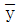
는?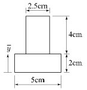
- 2.5cm
- 2.0cm
- 1.5cm
- 1.0cm
(정답률: 69%)

2. 그림과 같은 직사각형 단면에 전단력 45kN이 작용할 때 중립축에서 5cm 떨어진 a-a면의 전단응력은?
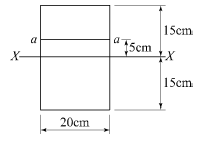
- 100 kPa
- 700 kPa
- 1 MPa
- 1 GPa
(정답률: 64%)
3. 길이 2m, 지름 20mm인 봉에 20kN의 인장력을 작용시켰더니 길이가 2.10m, 지름이 19.8mm로 되었다면 포아송비는?
- 0.1
- 0.2
- 0.3
- 0.4
(정답률: 72%)
4. 직사각형 단면 보에 발생하는 전단응력 τ와 보에 작용하는 전단력 S, 단면 1차 모멘트 G, 단면 2차 모멘트 I, 단면의 폭 b의 관계로 옳은 것은?
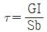
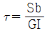
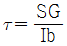
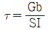
(정답률: 73%)
5. 지름 D, 길이 ℓ인 원형 기둥의 세장비는?
- 4ℓ / D
- 8ℓ / D
- 4D / ℓ
- 8D / ℓ
(정답률: 61%)
6. 트러스 해법에 대한 가정 중 틀린 것은?
- 각 부재는 마찰이 없는 힌지로 연결되어 있다.
- 절점을 잇는 직선은 부재축과 일치한다.
- 모든 외력은 절점에만 작용한다.
- 각 부재는 곡선재와 직선재로 되어 있다.
(정답률: 63%)
7. 그림과 같은 세 개의 힘이 평형상태에 있다면 C점에서 작용하는 힘 P와 BC사이의 거리 x는?
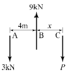
- P=4kN, x=3m
- P=6kN, x=3m
- P=4kN, x=2m
- P=6kN, x=2m
(정답률: 71%)
8. 그림과 같은 구조물에서 부내 AB가 받는 힘은?
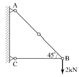
- 2.00kN
- 2.15kN
- 2.35kN
- 2.83kN
(정답률: 65%)
9. 길이 1m, 지름 1cm의 강봉을 80kN으로 당길 때 강봉의 늘어난 길이는? (단, 강봉의 탄성계수는 = 2.1 × 105 MPa)
- 4.26mm
- 4.85mm
- 5.14mm
- 5.72mm
(정답률: 69%)
10. 지간 길이 ℓ인 단순보에 등분포 하중 w가 만재되어 있을 때 지간 중앙점에서의 처짐각은? (단, EI는 일정하다.)(오류 신고가 접수된 문제입니다. 반드시 정답과 해설을 확인하시기 바랍니다.)
- 0
- wℓ3 / 24EI
- 5wℓ3 / 384EI
- 7wℓ3 / 384EI
(정답률: 51%)
11. 밑변 12cm, 높이 15cm인 삼각형이 밑변에 대한 단면 2차 모멘트의 값은?
- 2160cm4
- 3375cm4
- 6750cm4
- 10125cm4
(정답률: 63%)
12. 그림과 같은 내민보에서 A지점에서 5m 떨어진 C점의 전단력 Vc 와 휨모멘트 Mc 는?
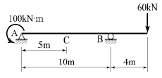
- Vc = -14kN, Mc = -170 kN･m
- Vc = -18kN, Mc = -240 kN･m
- Vc = 14kN, Mc = -240 kN･m
- Vc = 18kN, Mc = -170 kN･m
(정답률: 60%)
13. 지름 D인 원형 단면보에 휨모멘트 M이 작용할 때 휨응력은?
- 16M / πD3
- 6M / πD3
- 32M / πD3
- 64M / πD3
(정답률: 69%)
14. 그림과 같은 단순보의 지점 A에서 수직반력은?
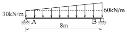
- 80kN
- 160kN
- 200kN
- 240kN
(정답률: 63%)
15. 그림과 같은 라멘에서 C점의 휨모멘트는?
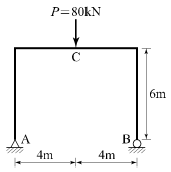
- 120kN･m
- 160kN･m
- 240kN･m
- 320kN･m
(정답률: 70%)
16. “동일 평면에서 한 점에 여러 개의 힘이 작용하고 있을 때, 평면의 임의 점에서의 모멘트 총합은 동일점에 대한 이들 힘의 합력 모멘트와 같다”는 정리는?
- Mohr의 정리
- Lami의 정리
- Castigliano의 정리
- Varignon의 정리
(정답률: 76%)
17. 그림과 같은 내민보에서 B점의 휨모멘트는?
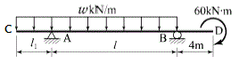
- wℓ2 / 2
- wℓ2
- -60kN·m
- -24kN·m
(정답률: 63%)
18. 지름 D인 원형단면의 단주 기둥에서 핵거리는?
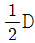
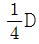
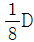
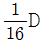
(정답률: 54%)
19. 등분포하중을 받는 직사각형 단면 단순보에서 최대 처짐에 대한 설명으로 옳은 것은?
- 보의 폭에 비례한다.
- 지간의 3제곱에 반비례한다.
- 탄성계수에 반비례한다.
- 보의 높이의 제곱에 비례한다.
(정답률: 65%)
20. 구조물의 단면계수에 대한 설명으로 틀린 것은?
- 차원은 길이의 3제곱이다.
- 반지름이 r인 원형 단면의 단면계수는 1개이다.
- 비대칭 삼각형의 도심을 통과하는 x축에 대한 단면계수의 값은 2개이다.
- 도심축에 대한 단면 2차 모멘트와 면적을 곱한 값이다.
(정답률: 47%)
2과목: 측량학
21. 반지름 500m인 단곡선에서 시단현 15m에 대한 편각은?
- 0°51′ 34″
- 1°4′ 27″
- 1°13′ 33″
- 1°17′ 42″
(정답률: 51%)
22. 다음 중 기지의 삼각점을 이용한 삼각측량의 순서로 옳은 것은?
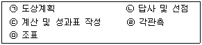
- ㉠ → ㉡ → ㉤ → ㉣ → ㉢
- ㉠ → ㉤ → ㉡ → ㉣ → ㉢
- ㉡ → ㉠ → ㉤ → ㉣ → ㉢
- ㉡ → ㉤ → ㉠ → ㉣ → ㉢
(정답률: 71%)
23. 지구자전축과 연직선을 기준으로 천체를 관측하여 경위도와 방위각을 결정하는 측량은?
- 지형측량
- 평판측량
- 천문측량
- 스타디아 측량
(정답률: 74%)
24. A점의 표고가 179.45m이고 B점의 표고가 223.57m이면, 축척 1 : 5000의 국가기본도에서 두 점 사이에 표시되는 주곡선 간격의 등고선 수는?
- 7개
- 8개
- 9개
- 10개
(정답률: 64%)
25. 평면직교좌표계에서 P점의 좌표가 x=500m, y=1000m이다. P점에서 Q점까지의 거리가 1500m이고 PQ측선의 방위각이 240°라면 Q점의 좌표는?
- x=-750m, y=-1299m
- x=-750m, y=-299m
- x=-250m, y=-1299m
- x=-250m, y=-299m
(정답률: 56%)
26. 고속도로의 노선설계에 많이 이용되는 완화곡선은?
- 클로소이드 곡선
- 3차 포물선
- 렘니스케이트 곡선
- 반파장 sin 곡선
(정답률: 75%)
27. 하천의 수위표 설치 장소로 적당하지 않은 곳은?
- 수위가 교각 등의 영향을 받지 않는 곳
- 홍수시 쉽게 양수표가 유실되지 않는 곳
- 상 · 하류가 곡선으로 연결되어 유속이 크지 않은 곳
- 하상과 하안이 세굴이나 퇴적이 되지 않는 곳
(정답률: 66%)
28. 그림과 같은 교호수준 측량의 결과에서 B점의 표고는? (단, A점의 표고는 60m이고 관측결과의 단위는 m이다.)
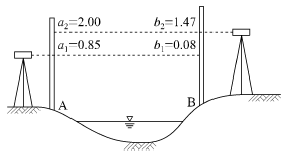
- 59.35m
- 60.65m
- 61.82m
- 61.27m
(정답률: 60%)
29. 수준측량의 야장 기입법 중 중간점(IP)이 많을 경우 가장 편리한 방법은?
- 승강식
- 기고식
- 횡단식
- 고차식
(정답률: 78%)
30. 다각측량(traverse survey)의 특징에 대한 설명으로 옳지 않은 것은?
- 좁고 긴 선로측량에 편리하다.
- 다각측량을 통해 3차원(x, y, z) 정밀 위치를 결정한다.
- 세부측량의 기준이 되는 기준점을 추가 설치할 경우에 편리하다.
- 삼각측량에 비하여 복잡한 시가지 및 지형기복이 심해 시준이 어려운 지역의 측량에 적합하다.
(정답률: 53%)
31. 삼각측량의 삼각점에서 행해지는 각관측 및 조정에 대한 설명으로 옳지 않은 것은?
- 한 측점의 둘레에 있는 모든 각의 합은 360°가 되어야 한다.
- 삼각망 중 어느 1변의 길이는 계산순서에 관계없이 동일해야 한다.
- 삼각형 내각의 합은 180°가 되어야 한다.
- 각관측 방법은 단측법을 사용하여야 한다.
(정답률: 59%)
32. 축척 1 : 1200 지형도상의 지역을 축척 1 : 1000로 잘못보고 면적을 계산하여 10.0m2를 얻었다면 실제면적은?
- 12.5m2
- 13.3m2
- 13.8m2
- 14.4m2
(정답률: 59%)
33. 노선의 종단측량 결과는 종단면도에 표시하고 그 내용을 기록해야 한다. 이때 종단면도에 포함되지 않는 내용은?
- 지반고와 계획고의 차
- 측점의 추가거리
- 계획선의 경사
- 용지 폭
(정답률: 75%)
34. 레벨의 조정이 불완전할 경우 오차를 소거하기 위한 가장 좋은 방법은?
- 시준 거리를 길게 한다.
- 왕복측량하여 평균을 취한다.
- 가능한 한 거리를 짧게 측량한다.
- 전시와 후시의 거리를 같도록 측량한다.
(정답률: 65%)
35. 원격탐사(Remote sensing)의 정의로 가장 적합한 것은?
- 지상에서 대상물체의 전파를 발생시켜 그 반사파를 이용하여 관측하는 것
- 센서를 이용하여 지표의 대상물에서 반사 또는 방사된 전자스펙트럼을 관측하고 이들의 자료를 이용하여 대상물이나 현상에 관한 정보를 얻는 기법
- 물체의 고유스펙트럼을 이용하여 각각의 구성성분을 지상의 레이더망으로 수집하여 처리하는 방법
- 지상에서 찍은 중복사진을 이용하여 항공사진 측량의 처리와 같은 방법으로 판독하는 작업
(정답률: 59%)
36. 양 단면의 면적이 A1=80m2, A2=40m2, 중간 단면적 Am=70m2 이다. A1, A2 단면 사이의 거리가 30m이면 체적은? (단, 각주공식 사용)
- 2000m3
- 2060m3
- 2460m3
- 2640m3
(정답률: 58%)
37. 클로소이드의 기본식은 A2=R·L이다. 이때 매개변수(parameter) A값을 A2으로 쓰는 이유는?
- 클로소이드의 나선형을 2차 곡선 형태로 구성하기 위하여
- 도로에서의 완화공선(클로소이드)은 2차원이기 때문에
- 양 변의 차원(dimension)을 일치시키기 위하여
- A값의 단위가 2차원이기 때문에
(정답률: 64%)
38. 어떤 거리를 같은 조건으로 5회 관측한 결과가 아래와 같다면 최확값은?
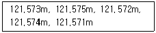
- 121.572m
- 121.573m
- 121.574m
- 121.575m
(정답률: 66%)
39. 그림은 레벨을 이용한 등고선 측량도이다. (a)에 알맞은 등고선의 높이는?
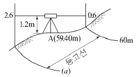
- 55m
- 57m
- 58m
- 59m
(정답률: 62%)
40. 트래버스 측량에서는 각관측의 정도와 거리관측의 정도가 서로 같은 정밀도로 되어야 이상적이다. 이때 각이 30″ 의 정밀도로 관측되었다면 각관측과 같은 정도의 거리관측 정밀도는?
- 약 1/12500
- 약 1/10000
- 약 1/8200
- 약 1/6800
(정답률: 53%)
3과목: 수리학
41. 부피가 5.8m3인 액체의 중량이 62.2N일 때, 이 액체의 비중은?
- 0.951
- 1.094
- 1.117
- 1.195
(정답률: 52%)
42. 부체(浮體)의 성질에 대한 설명으로 옳지 않은 것은?
- 부양면의 단면 2차 모멘트가 가장 작은 축으로 기울어지기 쉽다.
- 부체가 평행상태일 때는 부체의 중심과 부심이 동일 직선상에 있다.
- 경심고가 클수록 부체는 불안정하다.
- 우력이 영(0)일 때를 중립이라 한다.
(정답률: 63%)
43. 개수로에서 한계 수심에 대한 설명으로 옳은 것은?
- 상류로 흐를 때의 수심
- 사류로 흐를 때의 수심
- 최대 비에너지에 대한 수심
- 최소 비에너지에 대한 수심
(정답률: 58%)
44. 초속 25m/s, 수평면과의 각 60°로 사출된 분수가 도달하는 최대 연직 높이는? (단, 공기 등 기타 저항은 무시한다.)
- 23.9m
- 20.8m
- 27.6m
- 15.8m
(정답률: 47%)
45. 폭이 넓은 직사각형 수로에서 폭 1m당 0.5m3/s의 유량이 80cm의 수심으로 흐르는 경우에 이 흐름은? (단, 이 때 동점성 계수는 0.012cm2/s이고 한계수심은 29.4cm이다.)
- 층류이며 상류
- 층류이면 사류
- 난류이며 상류
- 난류이며 사류
(정답률: 45%)
46. 지하수의 투수계수와 관계가 없는 것은?
- 토사의 입경
- 물의 단위중량
- 지하수의 온도
- 토사의 단위중량
(정답률: 44%)
47. 개수로의 흐름에서 도수 전의 Froude 수가 Fr1일 때, 완전도수가 발생하는 조건은?
- Fr1 ＜ 0.5
- Fr1 = 1.0
- Fr1 = 1.5
- Fr1 ＞ √3.0
(정답률: 53%)
48. 개수로 구간에 댐을 설치했을 때 수심 h가 상류로 갈수록 등류 수심 h0 에 접근하는 수면곡선을 무엇이라 하는가?
- 저하곡선
- 배수곡선
- 수문곡선
- 수면곡선
(정답률: 60%)
49. 깊은 우물(심정호)에 대한 설명으로 옳은 것은?
- 불투수층에서 50m 이상 도달한 우물
- 집수 우물 바닥이 불투수층까지 도달한 우물
- 집수 깊이가 100m 이상인 우물
- 집수 우물 바닥이 불투수층을 통과하여 새로운 대수층에 도달한 우물
(정답률: 59%)
50. Darcy-Weisbach의 마찰손실 공식으로부터 Chezy의 평균유속 공식을 유도한 것으로 옳은 것은?
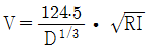
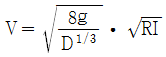
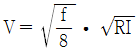
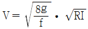
(정답률: 50%)
51. 흐름의 연속방정식은 어떤 법칙을 기초로 하여 만들어진 것인가?
- 질량 보존의 법칙
- 에너지 보존의 법칙
- 운동량 보존의 법칙
- 마찰력 불변의 법칙
(정답률: 58%)
52. 관수로에서 레이놀즈(Reynolds, Re) 수에 대한 설명으로 옳지 않은 것은? (단, V : 평균유속, D : 관의 지름, ν : 유체의 동점성계수)
- 레이놀즈 수는 VD/ν 로 구할 수 있다.
- Re ＞ 4000이면 층류이다.
- 레이놀즈 수에 따라 흐름상태(난류와 층류)를 알 수 있다.
- Re는 무차원의 수이다.
(정답률: 64%)
53. 오리피스의 지름이 5cm이고, 수면에서 오리피스의 중심까지가 4m인 예연 원형오리피스를 통하여 분출되는 유량은? (단, 유속계수 Cv=0.98, 수축계수 Cc=0.62이다.)
- 1.⑤6L/s
- 2.860L/s
- 10.56L/s
- 28.60L/s
(정답률: 41%)
54. 베르누이 정리에 관한 설명으로 옳지 않은 것은?
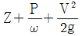
의 수두가 일정하다.- 정상류이어야 하며 마찰에 의한 에너지 손실이 없는 경우에 적용된다.
- 동수경사선이 에너지선보다 항상 위에 있다.
- 동수경사선과 에너지선을 설명할 수 있다.
(정답률: 63%)
55. 정수압의 성질에 대한 설명으로 옳지 않은 것은?
- 정수압은 수중의 가상면에 항상 수직으로 작용한다.
- 정수압의 강도는 전 수심에 걸쳐 균일하게 작용한다.
- 정수 중의 한 점에 작용하는 수압의 크기는 모든 방향에서 동일한 크기를 갖는다.
- 정수압의 강도는 단위 면적에 작용하는 힘의 크기를 표시한다.
(정답률: 46%)
56. 모세관 현상에 관한 설명으로 옳지 않은 것은?
- 모세관의 상승높이는 액체의 응집력과 액체와 관벽의 부착력에 의해 좌우된다.
- 액체의 응집력이 관 벽과의 부착력보다 크면 관내의 액체 높이는 관 밖의 액체보다 낮게 된다.
- 모세관의 상승높이는 모세관의 지름 d에 반비례한다.
- 모세관의 상승높이는 액체의 단위중량에 비례한다.
(정답률: 49%)
57. 폭이 10m인 직사각형 수로에서 유량 10m3/s가 1m의 수심으로 흐를 때 한계 유속은? (단, 에너지보정계수 α=1.1이다.)
- 3.96m/s
- 2.87m/s
- 2.07m/s
- 1.89m/s
(정답률: 32%)
58. 관수로에서 발생하는 손실수두 중 가장 큰 것은?
- 유입손실
- 유출손실
- 만곡손실
- 마찰손실
(정답률: 70%)
59. M, L, T가 각각 질량, 길이, 시간의 차원을 나타낼 때, 운동량의 차원으로 옳은 것은?
- [MLT-1]
- [MLT]
- [MLT2]
- [ML2T]
(정답률: 60%)
60. 그림과 같이 지름 5cm의 분류가 30m/s의 속도로 판에 수직으로 충돌하였을 때 판에 작용하는 힘은?(오류 신고가 접수된 문제입니다. 반드시 정답과 해설을 확인하시기 바랍니다.)
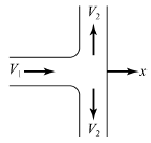
- 90N
- 180N
- 720N
- 1.81kN
(정답률: 41%)
4과목: 철근콘크리트 및 강구조
61. 판형에서 보강재(stiffener)의 사용목적은?
- 보 전체의 비틀림에 대한 강도를 크게 하기 위함이다.
- 복부판의 전단에 대한 강도를 높이기 위함이다.
- flange angle의 간격을 넓게 하기 위함이다.
- 복부판의 좌굴을 방지하기 위함이다.
(정답률: 71%)
62. 철근 콘크리트의 특징에 대한 설명으로 옳지 않은 것은?
- 콘크리트는 납품 시 습식재료인 상태이므로 완성된 상태의 품질 확인이 쉽지 않다.
- 숙련공에 의해 콘크리트의 배합이나 타설이 이루어지지 않으면 요구되는 품질의 콘크리트를 얻기 어렵다.
- 보통 재령 28일의 강도로 품질을 확보하므로 28일 후에 소정의 강도가 나타나지 않을 때 경제적, 시간적 손실을 입기 쉽다.
- 복잡한 여러 구조를 일체적인 하나의 구조로 만드는 것이 거의 불가능하다.
(정답률: 68%)
63. 강도설계법에 의한 휨부재 설계의 기본가정으로 옳지 않은 것은?
- 콘크리트의 압축연단에서 최대 변형률은 0.003으로 가정한다.
- 철근의 응력이 설계기준항복강도 fy 이하일 때 철근의 응력은 그 변형률에 철근의 탄성계수(Es)를 곱한 값으로 한다.
- 콘크리트의 압축응력분포는 일반적으로 삼각형으로 가정한다.
- 철근과 콘크리트의 변형률은 중립축에서의 거리에 직선 비례한다.
(정답률: 59%)
64. 기초 위에 돌출된 압축부재로서 단면의 평균최소치수에 대한 높이의 비율이 3 이하인 부재를 무엇이라 하는가?
- 단주
- 주각
- 장주
- 기둥
(정답률: 61%)
65. 프리스트레스트 콘크리트(PSC)에 의한 교량 가설공법 중 교대 후방의 작업장에서 교량 상부구조를 10~30m의 블록(block)으로 제작한 후, 미리 가설된 교각의 교축방향으로 밀어내고 다음 블록을 다시 제작하고 연결하여 연속적으로 밀어내며 시공하는 공법은?
- 이동식 지보공법(MSS)
- 캔틸레버공법(FCM)
- 동바리공법(FSM)
- 압출공법(ILM)
(정답률: 59%)
66. 표준갈고리를 갖는 인장 이형철근의 정착길이를 구하기 위하여 기본정착길이에 곱하는 것은?
- 갈고리 철근의 단면적
- 갈고리 철근의 간격
- 보정계수
- 형상계수
(정답률: 66%)
67. 철근콘크리트 부재의 장기처짐 계산시 지속하중의 재하기간 12개월에 적용되는 시간경과계수(
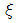
)는?- 1.0
- 1.2
- 1.4
- 2.0
(정답률: 63%)
68. 그림과 같이 PS 강선을 포물선으로 배치했을 때 PS 강선의 편심은 중앙점에서 100mm이고 양 지점에서는 0이었다. PS 강선을 3000kN으로 인장할 때 생기는 등분포 상향력은?
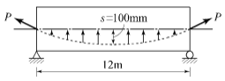
- 1.13kN/m
- 1.67kN/m
- 13.3kN/m
- 16.7kN/m
(정답률: 42%)
69. 전단철근으로 보강된 보에 사인장균열이 발생한 후, 전단철근이 항복에 이르는 동안에 단면의 내부에서 발생하는 내력의 종류가 아닌 것은?
- 사인장균열이 발생한 부분의 콘크리트가 부담하는 전단력
- 균열면과 교차된 면의 전단철근이 부담하는 전단력
- 인장 휨철근의 다우웰작용(dowel action)에 의한 수직 내력
- 거친 균열면의 상호 맞물림(interlocking)에 의한 내력의 수직 분력
(정답률: 39%)
70. 강도설계법에서 단철근 직사각형 보의 균형단면 중립축 위치(c)를 구하는 식으로 옳은 것은? (단, fy : 철근의 설계기준항복강도, fs : 철근의 응력, d : 보의 유효깊이)
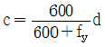
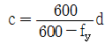
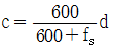
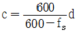
(정답률: 76%)
71. 강도설계법에 의해 휨설계를 할 경우 fck=40MPa인 경우 β1의 값은?
- 0.85
- 0.812
- 0.766
- 0.65
(정답률: 70%)
72. 단철근 직사각형 단면의 균형 철근비(ρb)를 이용하여 균형철근량(As)을 구하는 식은? (단, b=폭, d=유효깊이)
- As = ρbbd
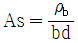
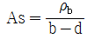
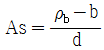
(정답률: 69%)
73. 그림과 같은 T형 단면의 보에서 등가직사각형 응력블록의 깊이(a)는? (단, fck=28MPa, fy=400MPa, As = 3855mm2)
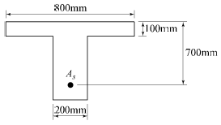
- 81mm
- 98mm
- 108mm
- 116mm
(정답률: 71%)
74. 그림과 같이 용접이음을 했을 경우 전단응력은?
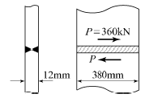
- 78.9MPa
- 67.5MPa
- 57.5MPa
- 45.9MPa
(정답률: 67%)
75. 콘크리트구조 철근상세 설계기준에 따르면 압축부재의 축방향 철근이 D32일 때 사용할 수 있는 띠철근에 대한 설명으로 옳은 것은?
- D6 이상의 띠철근으로 둘러싸야 한다.
- D10 이상의 띠철근으로 둘러싸야 한다.
- D13 이상의 띠철근으로 둘러싸야 한다.
- D16 이상의 띠철근으로 둘러싸야 한다.
(정답률: 50%)
76. 단면계수가 1200cm3인 I형강에 102kN･m의 휨모멘트가 작용할 때 하연에 작용하는 휨응력은?
- 85MPa
- 92MPa
- 102MPa
- 120MPa
(정답률: 62%)
77. 연직하중 1800kN을 받는 독립확대기초를 정사각형으로 설계하고자 한다. 지반의 허용지지력이 200kN/m2 라면 독립확대기초 1변의 길이는?
- 2m
- 2.5m
- 3m
- 3.5m
(정답률: 48%)
78. 프리스트레싱 긴장재 한 가닥만을 배치하여 1회의 긴장작업으로 프리스트레스의 도입이 끝나는 포스트텐션 방식의 프리스트레스트 콘크리트 부재에는 발생하지 않는 손실은?
- 긴장재의 마찰
- 정착장치의 활동
- 콘크리트의 탄성수축
- 긴장재 응력의 릴랙세이션
(정답률: 41%)
79. 그림과 같은 단철근보의 공칭전단강도(Vn)는? (단, 철근 D13을 수직 스터럽으로 사용하며, 스터럽 간격은 300mm, 철근 D13 1본의 단면적은 127mm2, fck=24MPa, fy=400MPa이다.)
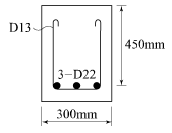
- 232.3kN
- 262.6kN
- 284.7kN
- 302.5kN
(정답률: 51%)
80. 철근콘크리트 1방향 슬래브에 대한 설명으로 틀린 것은?
- 1방향 슬래브에서는 정모멘트 철근 및 부모멘트 철근에 직각방향으로 수축 · 온도철근을 배치하여야 한다.
- 4변에 의해 지지되는 2방향 슬래브 중에서 단변에 대한 장변의 비가 2배를 넘으면 1방향 슬래브로 해석하며, 이 경우 일반적으로 슬래브의 장변방향을 경간으로 사용한다.
- 슬래브의 두께는 최소 100mm 이상으로 하여야 한다.
- 슬래브의 정모멘트 철근 및 부모멘트 철근의 중심 간격은 위험단면에서 슬래브 두께의 2배 이하 이어야 하고, 또한 300mm 이하로 하여야 한다.
(정답률: 48%)
5과목: 토질 및 기초
81. Hazen이 제안한 균등계수가 5 이하인 균등한 모래의 투수계수(k)를 구할 수 있는 경험식으로 옳은 것은? (단, c는 상수이고, D10은 유효입경이다.)
- k = cD10(cm/s)
- k = cD102(cm/s)
- k = cD103(cm/s)
- k = cD104(cm/s)
(정답률: 63%)
82. 다음 중 말뚝의 정역학적 지지력공식은?
- Sander공식
- Terzaghi공식
- Engineering News공식
- Hiley공식
(정답률: 67%)
83. 그림과 같은 모래지반에서 X-X 면의 전단강도는? (단, ø=30°, c=0)
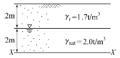
- 1.56 t/m2
- 2.14 t/m2
- 3.12 t/m2
- 4.27 t/m2
(정답률: 55%)
84. 포화단위중량이 1.8t/m3인 모래지반이 있다. 이 포화 모래지반에 침투수압의 작용으로 모래가 분출하고 있다면 한계동수경사는?
- 0.8
- 1.0
- 1.8
- 2.0
(정답률: 45%)
85. 다음 중 동해가 가장 심하게 발생하는 토질은?
- 실트
- 점토
- 모래
- 콜로이드
(정답률: 78%)
86. 압밀계수가 0.5 × 10-2cm2/s이고, 일면배수 상태의 5m 두께 점토층에서 90% 압밀이 일어나는데 소요되는 시간은? (단, 90% 압밀도에서 시간계수(T)는 0.848)
- 2.12 × 107 초
- 4.24 × 107 초
- 6.36 × 107 초
- 8.48 × 107 초
(정답률: 62%)
87. 입도분포곡선에서 통과율 10%에 해당하는 입경(D10)이 0.0⑤mm이고, 통과율 60%에 해당하는 입경(D60)이 0.025mm일 때 균등계수(Cu)는?
- 1
- 3
- 5
- 7
(정답률: 67%)
88. 유선망을 이용하여 구할 수 없는 것은?
- 간극수압
- 침투수량
- 동수경사
- 투수계수
(정답률: 57%)
89. 다음 그림과 같은 높이가 10m인 옹벽이 점착력이 0인 건조한 모래를 지지하고 있다. 모래의 마찰각이 36°, 단위중량이 1.6t/m3일 때 전 주동토압은?
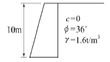
- 20.8 t/m
- 24.3 t/m
- 33.2 t/m
- 39.5 t/m
(정답률: 62%)
90. 다음 그림과 같은 접지압 분포를 나타내는 조건으로 옳은 것은?
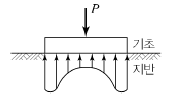
- 점토지반, 강성기초
- 점토지반, 연성기초
- 모래지반, 강성기초
- 모래지반, 연성기초
(정답률: 69%)
91. 진동이나 충격과 같은 동적외력의 작용으로 모래의 간극비가 감소하며 이로 인하여 간극수압이 상승하여 흙의 전단강도가 급격히 소실되어 현탁액과 같은 상태로 되는 현상은?
- 액상화 현상
- 동상 현상
- 다일러턴시 현상
- 턱소트로피 현상
(정답률: 71%)
92. 간극비(e) 0.65, 함수비(w) 20.5%, 비중(Gs) 2.69인 사질점토의 습윤단위중량(γt)는?
- 1.02 g/cm3
- 1.35 g/cm3
- 1.63 g/cm3
- 1.96 g/cm3
(정답률: 39%)
93. 사질지반에 40cm×40cm 재하판으로 재하 시험한 결과 16t/m2의 극한 지지력을 얻었다. 2m×2m의 기초를 설치하면 이론상 지지력은 얼마나 되겠는가?
- 16 t/m2
- 32 t/m2
- 40 t/m2
- 80 t/m2
(정답률: 57%)
94. 흙의 다짐시험에서 다짐에너지를 증가시킬 때 일어나는 변화로 옳은 것은?
- 최적함수비와 최대건조밀도가 모두 증가한다.
- 최적함수비와 최대건조밀도가 모두 감소한다.
- 최적함수비는 증가하고 최대건조밀도는 감소한다.
- 최적함수비는 감소하고 최대건조밀도는 증가한다.
(정답률: 64%)
95. 점성토 지반에 사용하는 연약지반 개량공법이 아닌 것은?
- Sand drain 공법
- 침투압 공법
- Vibro floatation 공법
- 생석회 말뚝 공법
(정답률: 57%)
96. 모래 치환법에 의한 흙의 밀도 시험에서 모래(표준사)는 무엇을 구하기 위해 사용되는가?
- 흙의 중량
- 시험구멍의 부피
- 흙의 함수비
- 지반의 지지력
(정답률: 69%)
97. 어떤 포화점토의 일축압축강도(qu)가 3.0kg/cm2이었다. 이 흙의 점착력(c)은?
- 3.0 kg/cm2
- 2.5 kg/cm2
- 2.0 kg/cm2
- 1.5 kg/cm2
(정답률: 62%)
98. 점토의 예민비(sensitivity ratio)는 다음 시험 중 어떤 방법으로 구하는가?
- 삼축압축시험
- 일축압축시험
- 직접전단시험
- 베인시험
(정답률: 72%)
99. 연약점토지반(ø=0)의 단위중량이 1.6t/m3, 점착력이 2t/m2이다, 이 지반을 연직으로 2m 굴착하였을 때 연직사면의 안전율은?
- 1.5
- 2.0
- 2.5
- 3.0
(정답률: 48%)
100. 아래는 불교란 흙 시료를 채취하기 위한 샘플러 선단의 그림이다. 면적비(Ar)를 구하는 식으로 옳은 것은?
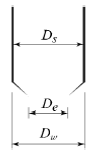
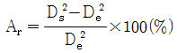
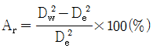
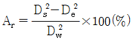
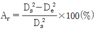
(정답률: 62%)
6과목: 상하수도공학
101. 일반적인 정수처리공정과 비교할 때 침전공정이 생략된 방식으로 통상적으로 수질변화가 적고 비교적 양호한 수질에서는 일반정수처리공정에 비해 설치비 및 운영비가 적게 소요되는 여과방식은?
- 직접여과
- 내부여과
- 급속여과
- 표면여과
(정답률: 60%)
102. 자연 유하식 관로를 설치할 때, 수두를 분할하여 수압을 조절하기 위한 목적으로 설치하는 부대설비는?
- 양수정
- 분수전
- 수로교
- 접합정
(정답률: 65%)
103. 어느 도시의 총인구가 5만명이고, 급수인구는 4만명일 때 1년간 총급수량이 200만m3이었다. 이 도시의 급수보급률과 1인1일평균급수량은?
- 125%, 0.110m3/인･일
- 125%, 0.137m3/인･일
- 80%, 0.110m3/인･일
- 80%, 0.137m3/인･일
(정답률: 60%)
104. 활성슬러지 공정의 2차 침전지를 설계하는데 다음과 같은 기준을 사용하였다. 이 침전지의 수리학적 체류시간은? (단, 수심=5.4m, 유입수량=5000m3/d, 표면부하율=30m3/m2·d)
- 2.8시간
- 3.5시간
- 4.3시간
- 5.2시간
(정답률: 42%)
1⑤. 맨홀의 설치장소로 적합하지 않은 것은?
- 관로의 방향이 바뀌는 곳
- 관로의 관경이 변하는 곳
- 관로의 단차가 발생하는 곳
- 관로의 수량변화가 적은 곳
(정답률: 67%)
106. 하수도계획에서 수질 환경기준에 준하는 배제방식, 처리방법, 시설의 취지 결정에 활용하기 위하여 필요한 조사는?
- 상수도급수현황
- 음용수의 수질기준
- 방류수역의 허용부하량
- 공업용수도의 현황
(정답률: 47%)
107. 상수도의 급수계통으로 알맞은 것은?
- 취수-도수-정수-배수-송수-급수
- 취수-도수-송수-정수-배수-급수
- 취수-송수-정수-배수-도수-급수
- 취수-도수-정수-송수-배수-급수
(정답률: 69%)
108. 염소의 살균능력이 큰 것부터 순서대로 나열된 것은?
- Chloramines ＞ OCl ＞ HOCl
- Chloramines ＞ HOCl ＞ OCl
- HOCl ＞ Chloramines ＞ OCl
- HOCl ＞ OCl ＞ Chloramines
(정답률: 62%)
109. 건축자재가 아닌 노출되는 관로 등에 신축이음관을 설치할 때, 몇 m마다 설치하여야 하는가?
- 5 ~ 10m
- 20 ~ 30m
- 50 ~ 60m
- 100 ~ 110m
(정답률: 71%)
110. 하천을 수원으로 하는 경우에 하천에 직접 설치할 수 있는 취수시설과 가장 거리가 먼 것은?
- 취수탑
- 취수틀
- 집수매거
- 취수문
(정답률: 66%)
111. 송수시설에 관한 설명으로 옳지 않은 것은?
- 계획송수량은 원칙적으로 계획1일최대급수량을 기준으로 한다.
- 송수는 관수로로 하는 것을 원칙으로 하되 개수로로 할 경우에는 터널 또는 수밀성의 암거로 한다.
- 송수방식에는 정수시설·배수시설과의 수위관계, 정수장과 배수지 사이의 지형과 지세에 따라 자연유하식, 펌프가압식 및 병용식이 있다.
- 송수관의 유속은 자연유하식인 경우에 허용 최대한도를 5.0m/s로 한다.
(정답률: 64%)
112. 우수관로 및 합류관로의 계획우수량에 대한 유속 기준은?
- 최소 0.8m/s, 최대 3.0m/s
- 최소 0.6m/s, 최대 5.0m/s
- 최소 0.5m/s, 최대 7.0m/s
- 최소 0.7m/s, 최대 8.0m/s
(정답률: 78%)
113. 1인1일평균급수량의 도시조건에 따른 일반적인 경향에 대한 설명으로 옳지 않은 것은?
- 도시규모가 클수록 수량이 크다.
- 도시의 생활수준이 낮을수록 수량이 크다.
- 기온이 높은 지방은 추운 지방보다 수량이 크다.
- 정액급수의 수도는 계량급수의 수도보다 수량이 크다.
(정답률: 75%)
114. 하수도시설의 목적(역할)과 거리가 먼 것은?
- 공공수역의 확대
- 생활환경의 개선
- 수질보전 가능
- 침수피해 방지
(정답률: 60%)
115. 침전지의 침전효율 E와 부유물 침강속도 vo, 유입유량 Q, 침전지의 표면적 A와의 관계식을 옳게 나타낸 것은?
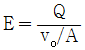
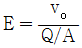
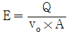
(정답률: 53%)
116. 하수도 계획 대상유역에서 분할된 각 구역별 유출계수가 표와 같을 때 전체 유역의 유출계수는?
- 0.350
- 0.410
- 0.447
- 0.534
(정답률: 51%)
117. 합류식과 분류식 하수관로의 특징에 관한 설명으로 옳지 않은 것은?
- 분류식은 합류식에 비해 오접합의 우려가 적다.
- 합류식은 분류식에 비해 우천시 처리장으로 다량의 토사유입이 있을 수 있다.
- 합류식은 분류식에 비해 청소, 검사 등이 유리하다.
- 분류식은 합류식에 비해 수세효과를 기대할 수 없다.
(정답률: 55%)
118. 하수처리에 관한 설명으로 옳지 않은 것은?
- 하수처리 방법은 물리적, 화학적, 생물학적 공정으로 대별할 수 있다.
- 보통침전은 응집제를 사용하는 화학적 처리 공정이다.
- 소독은 화학적 처리공정이라 할 수 있다.
- 생물학적 처리공정은 호기성 분해와 혐기성 분해로 대별할 수 있다.
(정답률: 60%)
119. 강우강도(intensity of rainfall)공식의 형태 중 탈보트(Talbot) 형은? (단, t는 지속기간(min)이고, a, b, m, n은 지역에 따라 다른 값을 갖는 상수이다.)
(정답률: 67%)
120. 반송슬러지 농도를 XR, 슬러지반송비를 R이라고 할 때, 반응조 내의 MLSS 농도 X를 구하는 식은? (단, 유입수의 SS는 무시함)
(정답률: 53%)